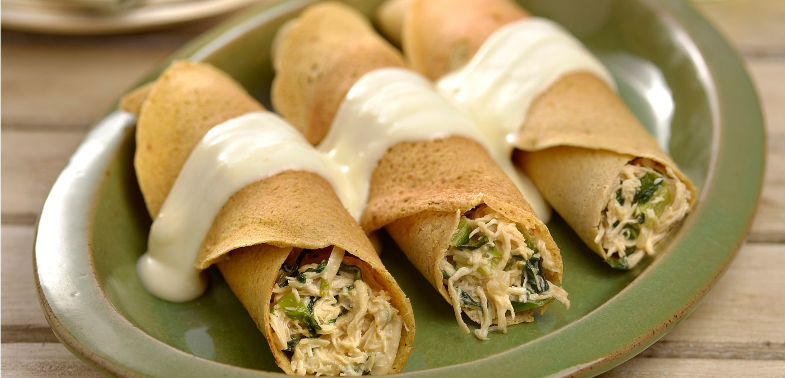

Panqueca de Aveia com Frango

⏱️ 35 min
👨👩👧👦 Serve 6 panquecas
Ingredientes (massa)
- 1 xícara (chá) de aveia em flocos finos
- 1 xícara (chá) de leite
- 1 ovo
- 1 colher (sopa) de azeite ou óleo
- Sal a gosto
Ingredientes (recheio)
- 2 xícaras (chá) de frango desfiado
- 1 cebola pequena picada
- 1 tomate picado
- Temperos a gosto (sal, pimenta, cheiro-verde)
Modo de preparo
- Bata todos os ingredientes da massa no liquidificador.
- Aqueça uma frigideira antiaderente e faça as panquecas finas, dourando dos dois lados.
- Refogue o frango com cebola, tomate e temperos.
- Recheie as panquecas com o frango, enrole e, se quiser, cubra com um molho leve de tomate.
 Papo de Panela
Papo de Panela